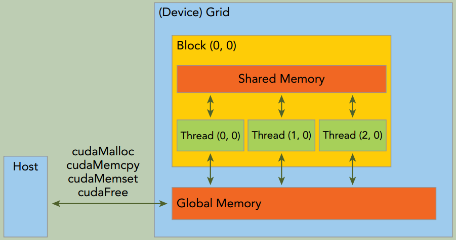
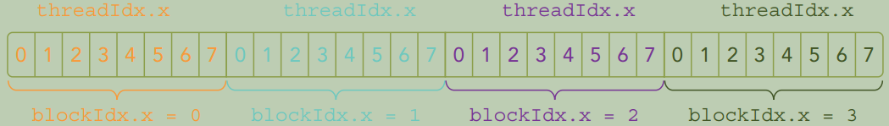
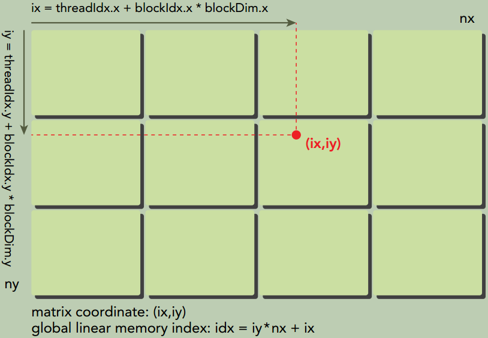
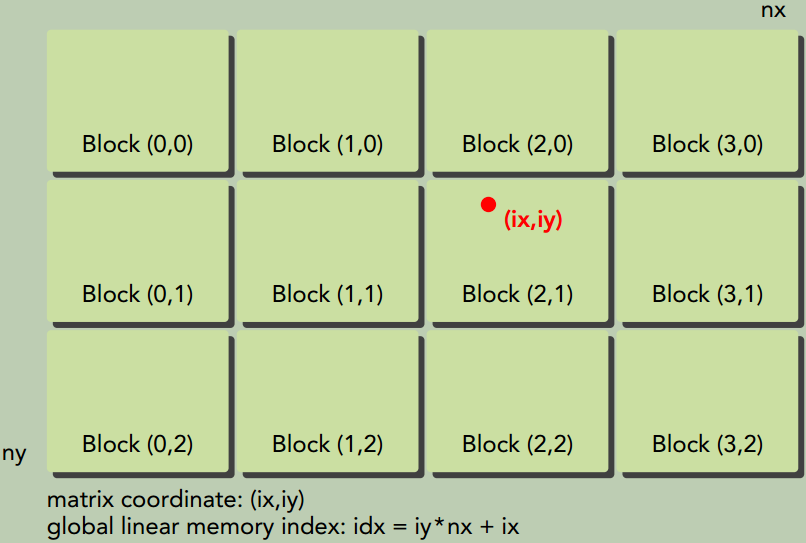

二、CUDA编程模型
CUDA编程模型概述
CUDA编程结构
站在程序员的角度，可以从以下几个不同层面来看待并行计算：
- 领域层(Domain level)
- 逻辑层(Logic level)
- 硬件层(Hardware level)
这三个层面对应了并行计算编程的不同阶段：
- 算法设计阶段，最关心的应是在领域层如何解析数据和函数，以便在并行环境中能正确、高效地解决问题。
- 编码阶段，关注点应转向如何组织并发线程。在这个阶段，需要从逻辑层面来思考，以确保线程和计算能正确地解决问题。在C语言并行编程中，需要使用
pthreads或OpenMP技术来显式地管理线程。CUDA提出了一个线程层次结构抽象的概念，以允许控制线程行为。 - 在硬件层，通过理解线程是如何映射到核心可以帮助提高其性能。
CUDA编程模型主要是异步的，因此在GPU上进行的运算可以与主机-设备通信重叠。内核一旦被启动，管理权立刻返回给主机，释放CPU来执行由设备上运行的并行代码实现的额外的任务。

内存管理
CUDA运行时负责分配与释放设备内存， 并且在主机内存和设备内存之间传输数据。
| 标准C函数 | CUDA C函数 |
|---|---|
malloc | cudaError_t cudaMalloc(void** devPtr, size_t size) |
free | cudaError_t cudaFree(void *devPtr) |
memset | cudaError_t cudaMemset(void* devPtr, int value, size_t count) |
memcpy | cudaError_t cudaMemcpy(void* dst, const void* src, size_t count, cudaMemcpyKind kind)同步函数，会导致主机阻塞 |

上图是一个简化的GPU内存结构， 它主要包含两部分： 全局内存和共享内存。全局内存类似于CPU的系统内存， 共享内存类似于CPU的缓存。 不过GPU的共享内存可以由CUDA C的kernel直接控制。
线程管理
当kernel函数在host侧启动后， 它的执行会移动到device侧， 此时设备中会产生大量线程且每个线程都执行由kernel函数指定的语句。

一个kernel函数启动后产生的所有线程统称为一个Grid。 同一Grid的所有线程共享全局内存空间。一个Grid由多个thread blocks构成，一个thread block包含一组线程，同一线程块内的线程协作可以通过2种方式来实现：同步Block-local synchronization和共享内存Block-local shared memory。（不同block内的线程不能协作）
在CUDA程序中有两组不同的网格和块变量：手动定义的dim3数据类型和预定义的uint3数据类型。在主机端，作为内核调用的一部分，你可以使用dim3数据类型定义一个网格和块的维度。当执行核函数时，CUDA运行时会生成相应的内置预初始化的网格、块和线程变量，它们在核函数内均可被访问到且为unit3类型。手动定义的dim3类型的网格和块变量仅在主机端可见，而unit3类型的内置预初始化的网格和块变量仅在设备端可见。
内置变量
gridDim, grid dimension, measured in blocksblockDim, block dimension, measured in threadsblockIdx, block index within a gridthreadIdx, thread index within a block
启动一个CUDA核函数
1
void kernel_name <<<grid, block>>>(argument_list);
执行配置的第一个值是网格维度， 也就是启动块的数目。 第二个值是块维度， 也就是每个块中线程的数目。
下图所示就是void kernel_name <<<4, 8>>>(argument_list);配置下的线程布局。

CUDA核函数的限制
- 只能访问设备内存
- 必须具有void返回类型
- 不支持可变数量的参数
- 不支持静态变量
- 显式异步行为
验证kernel函数
除了使用调试工具外， 还有两个非常简单实用的方法可以验证核函数。
- 在
Fermi及更高版本的设备端的核函数中使用printf函数。 - 可以将执行参数设置为
<<<1, 1>>>， 因此强制用1个块和1个线程执行核函数， 这模拟了串行执行。
给核函数计时
用CPU计时器计时
1
2
3
4
5
6
7
8
9
10
11
12
13
14
15
16
17
18
19
20
21
22
23
24
25
26
27
28
29
30
31
32
#include <sys/time.h>
#define CHECK(call) \
{ \
const cudaError_t error = call; \
if (error != cudaSuccess) \
{ \
fprintf(stderr, "Error: %s:%d, ", __FILE__, __LINE__); \
fprintf(stderr, "code: %d, reason: %s\n", error, \
cudaGetErrorString(error)); \
exit(1); \
} \
}
int main() {
double iStart, iElaps;
...
iStart = seconds();
sumArraysOnHost(h_A, h_B, hostRef, nElem);
iElaps = seconds() - iStart;
printf("sumArraysOnHost Time elapsed %f sec\n", iElaps);
...
iStart = seconds();
sumArraysOnGPU<<<grid, block>>>(d_A, d_B, d_C, nElem);
CHECK(cudaDeviceSynchronize()); // 等待所有的GPU线程运行结束
iElaps = seconds() - iStart;
printf("sumArraysOnGPU <<< %d, %d >>> Time elapsed %f sec\n", grid.x, block.x, iElaps);
// check kernel error
CHECK(cudaGetLastError()) ;
return 0;
}
用nvprof工具计时
自CUDA 5.0以来，NVIDIA提供了一个名为nvprof的命令行分析工具。
1
$ nvprof [nvprof_args] <application> [application_args]

以上结果的前半部分来自于程序的输出，后半部分来自于nvprof的输出。可以注意到，CPU计时器显示消耗的内核时间为3.26ms，而nvprof显示消耗的内核时间为2.90ms。在这个例子中，nvprof的结果更为精确，因为CPU计时器测量的时间中包含了来自nvprof附加的时间。
组织并行线程
使用合适的网格和块大小来正确地组织线程，可以对内核性能产生很大的影响。
下图说明了块和线程索引、矩阵坐标以及线性全局内存索引之间的对应关系。



设备管理
使用运行时API查询设备信息
1
2
3
4
5
6
7
8
9
10
11
12
13
14
15
16
17
18
19
20
21
22
23
24
25
26
27
28
29
30
31
32
33
34
35
36
37
38
39
40
41
42
43
44
45
46
47
48
49
50
51
52
53
54
55
56
57
58
59
60
61
62
63
64
65
66
67
68
69
70
#include "../common/common.h"
#include <cuda_runtime.h>
#include <stdio.h>
/*
* Display a variety of information on the first CUDA device in this system,
* including driver version, runtime version, compute capability, bytes of global memory, etc.
*/
int main(int argc, char **argv) {
printf("%s Starting...\n", argv[0]);
int deviceCount = 0;
cudaGetDeviceCount(&deviceCount);
if (deviceCount == 0) {
printf("There are no available device(s) that support CUDA\n");
} else {
printf("Detected %d CUDA Capable device(s)\n", deviceCount);
}
int dev = 0, driverVersion = 0, runtimeVersion = 0;
CHECK(cudaSetDevice(dev));
cudaDeviceProp deviceProp; // cudaDeviceProp结构体存放GPU设备的属性
CHECK(cudaGetDeviceProperties(&deviceProp, dev));
printf("Device %d: \"%s\"\n", dev, deviceProp.name);
cudaDriverGetVersion(&driverVersion);
cudaRuntimeGetVersion(&runtimeVersion);
printf(" CUDA Driver Version / Runtime Version %d.%d / %d.%d\n",
driverVersion / 1000, (driverVersion % 100) / 10,
runtimeVersion / 1000, (runtimeVersion % 100) / 10);
printf(" CUDA Capability Major/Minor version number: %d.%d\n", deviceProp.major, deviceProp.minor);
printf(" Total amount of global memory: %.2f GBytes (%llu bytes)\n",
(float)deviceProp.totalGlobalMem / pow(1024.0, 3), (unsigned long long)deviceProp.totalGlobalMem);
printf(" GPU Clock rate: %.0f MHz (%0.2f "
"GHz)\n", deviceProp.clockRate * 1e-3f, deviceProp.clockRate * 1e-6f);
printf(" Memory Clock rate: %.0f Mhz\n", deviceProp.memoryClockRate * 1e-3f);
printf(" Memory Bus Width: %d-bit\n", deviceProp.memoryBusWidth);
if (deviceProp.l2CacheSize) {
printf(" L2 Cache Size: %d bytes\n", deviceProp.l2CacheSize);
}
printf(" Max Texture Dimension Size (x,y,z) 1D=(%d), "
"2D=(%d,%d), 3D=(%d,%d,%d)\n", deviceProp.maxTexture1D,
deviceProp.maxTexture2D[0], deviceProp.maxTexture2D[1],
deviceProp.maxTexture3D[0], deviceProp.maxTexture3D[1],
deviceProp.maxTexture3D[2]);
printf(" Max Layered Texture Size (dim) x layers 1D=(%d) x %d, "
"2D=(%d,%d) x %d\n", deviceProp.maxTexture1DLayered[0],
deviceProp.maxTexture1DLayered[1], deviceProp.maxTexture2DLayered[0],
deviceProp.maxTexture2DLayered[1],
deviceProp.maxTexture2DLayered[2]);
printf(" Total amount of constant memory: %lu bytes\n", deviceProp.totalConstMem);
printf(" Total amount of shared memory per block: %lu bytes\n", deviceProp.sharedMemPerBlock);
printf(" Total number of registers available per block: %d\n", deviceProp.regsPerBlock);
printf(" Warp size: %d\n", deviceProp.warpSize);
printf(" Maximum number of threads per multiprocessor: %d\n", deviceProp.maxThreadsPerMultiProcessor);
printf(" Maximum number of threads per block: %d\n", deviceProp.maxThreadsPerBlock);
printf(" Maximum sizes of each dimension of a block: %d x %d x %d\n",
deviceProp.maxThreadsDim[0],
deviceProp.maxThreadsDim[1],
deviceProp.maxThreadsDim[2]);
printf(" Maximum sizes of each dimension of a grid: %d x %d x %d\n",
deviceProp.maxGridSize[0],
deviceProp.maxGridSize[1],
deviceProp.maxGridSize[2]);
printf(" Maximum memory pitch: %lu bytes\n", deviceProp.memPitch);
exit(EXIT_SUCCESS);
}
确定最优GPU
一些系统支持多GPU。在每个GPU都不同的情况下，选择性能最好的GPU运行核函数是非常重要的。 通过比较GPU包含的多处理器的数量选出计算能力最佳的GPU。如果你有一个多GPU系统， 可以使用以下代码来选择计算能力最优的设备。
1
2
3
4
5
6
7
8
9
10
11
12
13
14
15
int numDevices = 0;
cudaGetDeviceCount(&numDevices); // GPU卡的数量
if (numDevice > 1) {
int maxMultiprocessors = 0;
int maxDevice = 0;
for (int i = 0; i < numDevices; i++) {
cudaDeviceProp props;
cudaGetDeviceProperties(&props, i);
if (maxMultiprocessors < props.maxMultiprocessors) {
maxMultiprocessors = props.maxMultiprocessors;
maxDevice = i;
}
}
cudaSetDevice(maxDevice);
}
在运行时设置设备
对于一个有N个GPU的系统，nvidia-smi将设备ID标记为0到N-1。 使用环境变量CUDA_VISIBLE_DEVICES，就可在运行时指定所选的GPU且无须更改应用程序。设置运行时环境变量export CUDA_VISIBLE_DEVICES=2。 nvidia驱动程序会屏蔽其他GPU，这时设备2作为设备0出现在应用程序中。CUDA_VISIBLE_DEVICES也可用来指定多个设备。例如，如果想测试GPU 2和GPU3，可设置CUDA_VISIBLE_DEVICES=2,3。那么在运行时，nvidia驱动程序将只使用ID为2和3的设备，并且会将设备ID分别映射为0和1。
习题
1
在文件sumArraysOnGPU-timer.cu中，设置block.x＝1023，重新编译并运行。与执行配置为block.x＝1024的运行结果进行比较，试解释其区别和原因。
block.x＝1024比block.x＝1023kernel函数的性能更好，在Tesla V100上测试前者是后者的1.05左右。由于线程调度是以32个为1组，
block.x＝1023配置有2点缺陷：
- 由于1023不能整除32，每个线程块的最后一个线程束都有一个disabled线程不工作。
- 每个线程块的线程束更少导致同样规模输入需要更多的线程块。由于只有一定数量的线程块可以真正并行，更多的线程块导致更长的执行时间。
2
参考文件sumArraysOnGPU-timer.cu，设置block.x＝256。新建一个内核，使得每个线程处理两个元素。将此结果和其他的执行配置进行比较。
第一种方法：一个线程处理的2个元素是相邻的。
1
2
3
4
5
6
7
8
9
10
11
12
13
14
15
16
17
18
19
__global__ void sumArraysOnGPU(float *A, float *B, float *C, const int N)
{
- int i = blockIdx.x * blockDim.x + threadIdx.x;
+ int i = 2 * (blockIdx.x * blockDim.x + threadIdx.x);
+ int j = i + 1;
if (i < N) C[i] = A[i] + B[i];
+ if (j < N) C[j] = A[j] + B[j];
}
int main(int argc, char **argv)
@@ -116,7 +118,7 @@ int main(int argc, char **argv)
// invoke kernel at host side
int iLen = 512;
dim3 block (iLen);
- dim3 grid ((nElem + block.x - 1) / block.x);
+ dim3 grid ((nElem / 2 + block.x - 1) / block.x);
iStart = seconds();
3
参考文件sumMatrixOnGPU-2D-grid-2D-block.cu，并将它用于整数矩阵的加法运算中，获取最佳的执行配置。
直接将float改为int即可。
dim3 block(dimx, dimy);中
(dimx, dimy) = (2, 128)的耗时几乎是(dimx, dimy) = (128, 2)的2倍
(dimx, dimy) = (64, 16)和(dimx, dimy) = (256, 4)的性能相当，是最佳的执行配置。
4
参考文件sumMatrixOnGPU-2D-grid-1D-block.cu，新建一个内核，使得每个线程处理两个元素，获取最佳的执行配置。
dim3 block(dimx);中
dimx=256是最佳配置。配置范围{1, 2, 4, 8, 16, 32, 64, 128, 256, 512, 1024}
总体规律是：dimx<=256时，随着dimx的增加，性能呈线性趋势增加；在dimx>256时，随着dimx的增加，性能缓缓下降。
5
借助程序checkDeviceInfor.cu，找到你的系统所支持的网格和块的最大尺寸。
在Tesla V100上
Maximum sizes of each dimension of a block: 1024 x 1024 x 64 Maximum sizes of each dimension of a grid: 2147483647 x 65535 x 65535